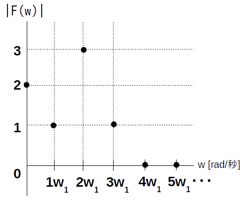
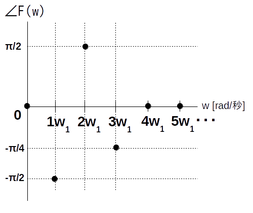

演習時間: 20 分
演習2-1 (個人PC、20分): 式が分からない周期性時間領域アナログ信号 $f(t)$ から何らかの手法を用いてスペクトル図を求めた状況を考えます。
スペクトル図から元の $f(t)$ の式を求め、さらに $f(t)$ のグラフを描いてみましょう。
振幅スペクトルは以下の通りです。

位相スペクトルは以下の通りです。

基本角周波数は $w_1 = 4\pi$ [rad/秒] とします。
要らない紙などに元の式を書きます。
表計算ソフトを起動します。
時刻の範囲は $0 \leq t \leq 4$ 秒区間、代表点は 0.01 秒刻みとします。
最初の列に各時刻をオートフィルを使って入力します。
次の列に各時刻における $f(t)$ の値をオートフィルを使って入力します。
グラフを挿入します。グラフの種類は散布図、線のみ、平滑化なしとします。
グラフタイトルに元の式を書きます。
シートを保存します。ファイル名は「SPEC-2-1」として下さい。
チーム内で答え合わせをし、代表者は提出用のグラフを画像ファイルとして保存して下さい。
代表者は指定場所に「復元したグラフ」の図を貼り付けて下さい。